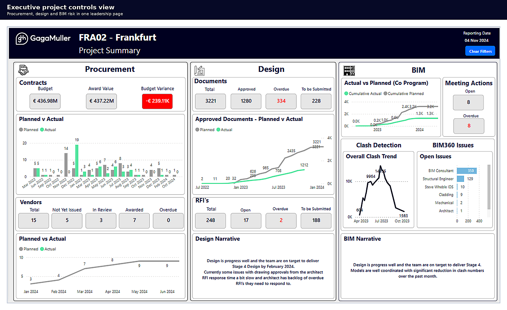
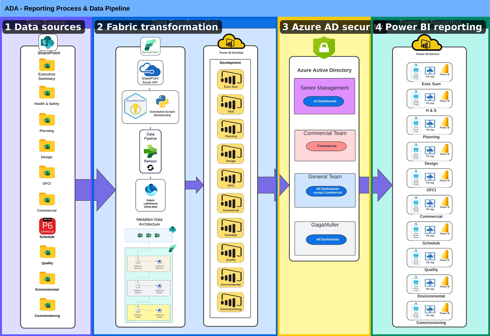
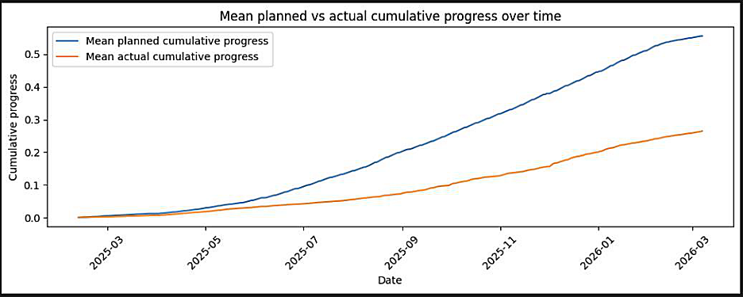

Business Intelligence Developer & Data Analyst · London
I build trusted BI reporting systems from fragmented business data.
I turn data from databases, business systems, cloud platforms and operational sources into Power BI dashboards, Microsoft Fabric reporting layers and decision ready models that teams can rely on.
I work across the full reporting layer, from source data and transformation logic to semantic models, dashboards and stakeholder ready views.
The reporting layer
- 01 / Source
Source data
Databases, business systems and operational files.
- 02 / Transform
Transformation
SQL, Python and Fabric logic that makes data reliable.
- 03 / Model
Models
DAX, relationships, measures and reporting definitions.
- 04 / Report
Dashboards
Power BI views designed around business decisions.
Selected work
Case studies from real reporting problems.

One Portfolio. Four Versions of the Truth.
Four teams were working from disconnected reporting sources across cost, cashflow, progress and schedule reporting. I built one trusted Power BI reporting layer that separated actuals from forecasts and made the portfolio easier to review.
- Power BI
- DAX
- SQL
- Data Modelling

From Fragmented Reporting to a Governed Lakehouse.
A governed reporting architecture that moved SharePoint and spreadsheet based reporting into Microsoft Fabric using Lakehouse tables, Python notebooks and controlled Power BI reporting outputs.
- Fabric
- Lakehouse
- Python
- Power BI

Automated Construction Progress Early Warning System
A Python machine learning project focused on forecasting construction progress, comparing model performance and identifying early warning signals from planned versus actual progress data.
- Python
- Pandas
- Scikit Learn
- Forecasting
- Machine Learning
How I deliver BI work
From business question to live reporting product.
I work across the full BI lifecycle, from clarifying the business question and shaping the data foundation to building, publishing, maintaining and improving reporting products after delivery.
- 01
Understand the reporting problem
Clarify the business question, KPI logic, audience and decisions the report needs to support.
- 02
Prepare the data foundation
Work with teams and data owners to understand sources, identify gaps and agree the reporting process.
- 03
Build the reporting model
Create data models, DAX measures, validation checks and dashboard views that make performance easier to read.
- 04
Validate the numbers
Check outputs against source data, investigate inconsistencies and review logic with stakeholders.
- 05
Publish and manage Power BI Apps
Package dashboards into Power BI Apps, manage audience access and organise report navigation.
- 06
Maintain and improve after delivery
Monitor refresh schedules, resolve data issues, document changes and improve reports as needs evolve.
Skills and tools
The stack I use to make reporting reliable.
BI and reporting
- Power BI
- DAX
- KPI design
- Dashboard navigation
- Stakeholder reporting views
Data modelling
- Relationships and semantic layers
- Date logic
- Long format reshaping
- Validation checks
Engineering
- SQL and Python
- Microsoft Fabric and Lakehouse
- Data Factory
- SharePoint connected data
Delivery
- Requirements gathering
- Documentation and handover
- Governance
- Data quality conversations
About
I care about the structure behind the dashboard.
I started in data through computer science, where data warehousing and dimensional modelling made the link between structure and decision making clear.
Since then I have worked as a BI Developer at GagaMuller Group, building reporting solutions across project controls, finance, programme delivery and operational reporting.
I hold an MSc in Data Science and Analytics, which added forecasting, machine learning and applied analytics to the BI delivery work I already do.
Contact
Open to Data Analyst, BI Analyst and Power BI roles.
Based in London with full right to work in the UK. I am interested in teams that need reliable reporting layers, clear dashboards and practical analytics that help people make better decisions.